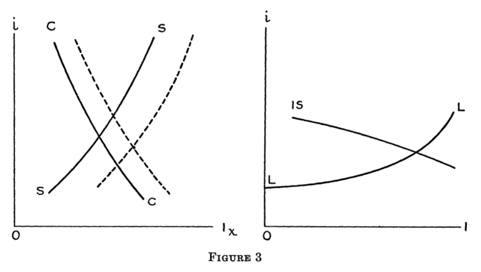

<!doctype html>
<html lang="en">

	<head>
		<meta charset="utf-8">

		<title>reveal.js - ClassHT 8</title>

		<link rel="stylesheet" href="plugin/reveal.css">
		<link rel="stylesheet" href="plugin/beige.css" id="theme">
        <link rel="stylesheet" href="plugin/monokai.css">
        <link rel="stylesheet" href="plugin/title-footer.css">
       
	</head>

	<body>

		<div class="reveal">

			<div class="slides">


                <!-- Slides are separated by three dashes (quick 'n dirty regular expression) -->
                <section data-markdown data-separator="\n---\n" data-separator-vertical="^\n--\n$">
                    <script type="text/template">
                        <!-- .slide: style="text-align: left;" -->
                        # History of Economic Analysis
                        ## Part III - Macroeconomics
                        ### Francesco Franco - Nova SBE
                         
                        ---
                        <!-- .slide: style="text-align: left;" -->
                        ### Microeconomics and Macroeconomics

                        <center></center>

                        ---

                        

                        <!-- .slide: style="text-align: left;" -->
                        ### Knut Wicksell 1851-1926
                        
                        <center></center>
                        ---
                         <!-- .slide: style="text-align: left;" -->
                        ### Aggregate Production Function and Income distribution

                        Lectures on Political Economy - Production and Distribution- Part II 

                        > \...**when all the factors of production are increased in the same
                        > proportion, the total product also increases exactly
                        > proportionately**\...A more general proof is the following. If we regard
                        > the product $P$ as a function of the number of labourers, $a$, and of
                        > the number of units of land, $b$, both $a$ and $b$ being regarded as
                        > continuous, then the marginal productivities may be expressed by the
                        > partial derivatives of $P$ with respect to $a$ and $b$; therefore, **if
                        > the condition is to be satisfied, we must have**
                        > $$a\frac{\partial P}{\partial a}+b\frac{\partial P}{\partial b}=P$$ a
                        > partial differential equation, the general integral of which is known
                        > to be: $$P=af\left(\frac{b}{a}\right)$$ in which $f$ is an arbritrary
                        > function, i.e. $P$ must be homogenous and linear function of $a$ and
                        > $b$. Among the infinite number of functions which satisfy this
                        > condition, we may give **as an example $P=a^{\alpha}b^{\beta}$ in which
                        > the indices $\alpha$ and $\beta$ are two constant fractions whose
                        > sum$=1$.**

                        ---

                        <!-- .slide: style="text-align: left;" -->
                       

                        ### Capital and interest rate
                        
                        > To give an account of **the real nature of capital, its role in
                        > production and the grounds upon which its owners, like the owners of
                        > land and labour, claim a share in the product, is considerably more
                        > difficult than with the other two factors and has led to innumerable
                        > controversies among economists**\...In the ordinary sense of the term,
                        > it includes all auxiliaries to production, with the exception of
                        > natural forces in their original form, and direct human labour\....If
                        > for the moment we leave aside the question of the origin of the
                        > productivity (or value-creating power) of capital, and regard it as an
                        > empirical fact, we may readily apply to capital the theory developed
                        > above---that **the share of the product going to any particular factor
                        > of production is determined by its marginal productivity**.


                        > We may thus regard **capital** as a single coherent mass of **saved-up
                        > labour and saved-up land**, which is accumulated in the course of years...                    
                        > **Interest is the
                        > difference between the marginal productivity of saved-up labour and
                        > land and of current labour and land**.
                        
                        > \...If, in the current year, there are employed in a particular
                        > business $a$ workers and $b$ acres of the current year, and $a_1$ labour
                        > years and $b_1$ acre years of the preceding year, turned into capital in
                        > one form or another, then the total product during the year may be
                        > regarded as a function of all these quantities, i.e.
                        > $F\left(a,b,a_{1},b_{1}\right)$. The partial derivatives of this
                        > function with respect to each of the variables will be on the one
                        > hand, $F_{a}=l$,$F_{b}=r$, i.e. wages and rent for current labour and
                        > land, and, on the other hand,
                        > $F_{a_{1}}=l_{1}\left(>l\right)$,$F_{b_{1}}=r_{1}\left(>r\right)$
                        > what may be called wages (including interest) for the saved-up labour
                        > and rent (including interest) for the saved-up land. Equilibrium
                        > clearly demands that $l_{1}:l=r_{1}:r$. The two equal quantities
                        > $$\frac{l_{1}-l}{l}=\frac{r_{1}-r}{r}=i$$ will then each represent the
                        > rate of interest on the investment of capital for one year.

                        ---

                        <!-- .slide: style="text-align: left;" -->
                        
                        ### The natural rate of interest

                        Interest and Prices 

                        > **The Quantity Theory**, on the other hand, even in the form in which it
                        > is presented in Ricardo's truly classical writings about money, **is
                        > open to too many objections**, as pointed out by later writers, to be
                        > accepted without modification\...
                        
                        > The following line of thought seemed capable of leading to a useful
                        > conclusion. An excess of money will, according to Ricardo, show itself
                        > in two ways---partly through a rise in all prices, partly through a
                        > fall in the rate of interest\...
                        
                        > If the monetary institutions offer their money or their credit on
                        > abnormally favourable terms, this must logically lead to an
                        > intensified use of money or credit on the part of the public. A rise
                        > in prices is the result, and we have seen that prices will continue
                        > rising so long as credit remains easy. A tightening of credit has, of
                        > course, the opposite effect. A very important qualification is,
                        > however, necessary. Though it is called for by the very nature of
                        > these phenomena, it is frequently overlooked, and hasty conclusions,
                        > which the facts fail to support, are the result. **The rate of interest
                        > charged for loans can clearly never be either high or low in itself,
                        > but only in relation to the return which can, or is expected to, be
                        > obtained by the man who has possession of money**. It is not a high or
                        > low rate of interest in the absolute sense which must be regarded as
                        > influencing the demand for raw materials, labour, and land or other
                        > productive resources, and so indirectly as determining the movement of
                        > prices. **The causative factor is the current rate of interest on loans
                        > as compared with what I shall be calling the natural rate of interest
                        > on capital. This natural rate is roughly the same thing as the real
                        > interest of actual business.**

                        ---

                        <!-- .slide: style="text-align: left;" -->

                        ### Inflation and deflation

                        Introductory - Chapter I  

                        > **Changes in the general level of prices** have always excited great
                        > interest. Obscure in origin, they **exert a profound and far-reaching
                        > influence on the whole economic and social life of a country**.
                        
                        > \..**.A general rise in prices is, of course, to the disadvantage of all
                        > those who receive fixed money incomes**, as is the case to-day with a
                        > constantly increasing number of social groups. It is also to the
                        > disadvantage of all those who derive the whole, or a large part, of
                        > their incomes by lending money capital of one kind or another.
                        
                        > **A lasting fall in the prices of all commodities is generally
                        > recognised as no less significant an evil**. While it is true that with
                        > the same wages the workers would be able to obtain more of the
                        > necessaries of life, this advantage is frequently outweighed by the
                        > other consequences of a fall in prices. Business is paralysed, and
                        > growing unemployment and falling wages result.

                        ---

                        <!-- .slide: style="text-align: left;" -->

                        ### Irwing Fisher 

                        > THE tremendous expansion of credit during and since the World War to finance military operations as well as post-war reparations, reconstruction, and the rebuilding of industry and trade has brought the problems of capitalism and the nature and origin of interest home afresh to the minds of business men as well as to economists...
                        ...Inflation during and since the War caused prices to soar and real interest rates to sag in Germany and other nations far below zero: thus impoverishing millions of investors.
                         Theory of Interest rate - Preface   

                        ---
                        

                        <!-- .slide: style="text-align: left;" -->
                        #### Intertemporal Equilibrium

                        <center></center>

                        > The relation of both impatience and opportunity to the rate of interest, in my opinion, can be comprehended
                         accurately only by analyzing rigorously these concepts and determining the effect of each upon the income
                          stream. By this procedure, we arrive at a fundamental explanation of the nature of impatience and of return
                           on income invested and see how, by changes in the income stream, these rates are brought into conformity
                            with the rate of interest.
                            Theory of Interest rate - Productivity as a Determinant of Interest Rates

                        ---
                        <!-- .slide: style="text-align: left;" -->
                        #### Debt Deflation


                        > I am offering this paper as embodying, in brief, my present "creed" on the whole subject of so-called "cycle theory." My "creed" consists of 49 "articles" some of which are old and some new.
                        
                        >13. There may even be a general over-production and in either of two senses: (a) there may be, in general, at a particular point of time, over-large inventories or stocks on hand, or (b) there may be, in general, during a particular period of time, an over-rapid flow of production. The classical notion that over-production can only be relative as between different products is erroneous. Aside from the abundance or scarcity of particular products, relative to each other, production as a whole is relative to human desires and aversions, and can as a whole overshoot or undershoot the equilibrium mark. In fact, except for brief moments, there must always be some degree of general over-production or general under-production and in both senses-stock and flow.
                        
                        >14. But, in practice, general over-production, as popularly imagined, has never, so far as I can discover, been a chief cause of great dis-equi- librium. The reason, or a reason, for the common notion of over-pro- duction is mistaking too little money for too much goods.
                        ....
                        
                        >24. Assuming, accordingly, that, at some point of time, a state of over-indebtedness exists, this will tend to lead to liquidation, through the alarm either of debtors or creditors or both. Then we may deduce the following chain of consequences in nine links: (1) Debt liquidation leads to distress selling and to (2) Contraction of deposit currency, as bank loans are paid off, and to a slowing down of velocity of circula- tion. This contraction of deposits and of their velocity, precipitated by distress selling, causes (3) A fall in the level of prices, in other words, a swelling of the dollar. Assuming, as above stated, that this fall of prices is not interfered with by reflation or otherwise, there must be (4) A still greater fall in the net worths of business, precipitating bank- ruptcies and (5) A like fall in profits, which in a "capitalistic," that is, a private-profit society, leads the concerns which are running at a loss to make (6) A reduction in output, in trade and in employment of labor. These losses, bankruptcies, and unemployment, lead to (7) Pes- simism and loss of confidence, which in turn lead to (8) Hoarding and slowing down still more the velocity of circulation. The above eight changes cause (9) Complicated disturbances in the rates of interest, in particular, a fall in the nominal, or money, rates and a rise in the real, or commodity, rates of interest.
                        ---
                        <!-- .slide: style="text-align: left;" -->

                        ### John Maynard Keynes 1883-1946

                        <center></center>
                        
                        
                        ---

                        <!-- .slide: style="text-align: left;" -->

                        ### A new paradigm   
                        The General Theory of Employment, Interest and Money - preface 

                        > This book is chiefly addressed to my fellow economists. I hope that it
                        > will be intelligible to others. But its main purpose is to deal with
                        > difficult questions of theory, and only in the second place with the
                        > applications of this theory to practice. **For if orthodox economics is
                        > at fault, the error is to be found not in the superstructure, which
                        > has been erected with great care for logical consistency, but in a
                        > lack of clearness and of generality in the premisses.**
                        
                        > \...I myself held with conviction for many years the theories which I
                        > now attack, and I am not, I think, ignorant of their strong points.
                        
                        > \...**A monetary economy, we shall find, is essentially one in which
                        > changing views about the future are capable of influencing the
                        > quantity of employment and not merely its direction.** But **our method** of
                        > analysing the economic behaviour of the present under the influence of
                        > changing ideas about the future **is one which depends on the
                        > interaction of supply and demand**, and is in this way linked up with
                        > our fundamental theory of value. We are thus led to a more general
                        > theory, which includes the classical theory with which we are
                        > familiar, as a special case.
                        
                        > \...The difficulty lies, not in the new ideas, but in escaping from
                        > the old ones, which ramify, for those brought up as most of us have
                        > been, into every corner of our minds.

                        ---

                        <!-- .slide: style="text-align: left;" -->
                        ### The level of employment

                        The General Theory of Employment, Interest and Money - chapter 2 

                        > **Most treatises on the theory of Value and Production** are primarily
                        > concerned with the **distribution of a given volume of employed
                        > resources between different** uses and with the conditions which,
                        > assuming the employment of this quantity of resources, **determine their
                        > relative rewards and the relative values of their products**.
                        
                        > \...But the pure theory of **what determines the actual employment** of
                        > the available resources has seldom been examined in great detail.
                        
                        > **The classical theory of employment**--- supposedly simple and obvious---
                        > has been based, I think, on two fundamental postulates, though
                        > practically without discussion, namely: I. The wage is equal to the
                        > **marginal product** of labour\....II. The utility of the wage when a
                        > given volume of labour is employed is equal to the **marginal disutility**
                        > of that amount of employment.

                        > \...This postulate is compatible with what may be called **"frictional"
                        > unemployment**\....In addition to "frictional" unemployment, the
                        > postulate is also compatible with **"voluntary" unemployment**\...The
                        > classical postulates do **not admit** of the possibility of the third
                        > category, which I shall define below as **"involuntary" unemployment**.

                        ---

                        <!-- .slide: style="text-align: left;" -->

                        ### Nominal wages vs real wages

                        The General Theory of Employment, Interest and Money - chapter 2 

                        
                       
                        
                        > \...The traditional theory maintains, in short, that **the wage bargains**
                        > between the entrepreneurs and the workers determine the real wageso
                        > that, assuming free competition amongst employers and no restrictive
                        > combination amongst workers, the latter can, if they wish, **bring their
                        > real wages into conformity with the marginal disutility** of the amount
                        > of employment offered by the employers at that wage.
                        
                        > \...To sum up: **there are two objections** to the second postulate of the
                        > classical theory. The first relates to the actual behaviour of labour.
                        > A fall in real wages due to a rise in prices, **with money-wages
                        > unaltered**, does not, as a rule, cause the supply of available labour
                        > on offer at the current wage to fall below the amount actually
                        > employed prior to the rise of prices\....

                        > But the other, more fundamental, objection, which we shall develop in
                        > the ensuing chapters, flows from our **disputing the assumption that the
                        > general level of real wages is directly determined by the character of
                        > the wage bargain**.
                        

                       
                                               
                        > \...Since there is imperfect mobility of labour, and wages do not tend
                        > to an exact equality of net advantage in different occupations,
                        > **any individual or group of individuals, who consent to a reduction of
                        > money-wages relatively to others, will suffer a restive reduction in
                        > real wages, which is a sufficient justification for them to resist it**.
                        
                       

                        ---

                        <!-- .slide: style="text-align: left;" -->
                        ### Full employment

                        The General Theory of Employment, Interest and Money - chapter 3

                       
                        
                        > \...The value of $D$ at the point of the aggregate demand function,
                        > where it is intersected by the aggregate supply function, will be
                        > called the **effective demand**.
                        
                        
                      
                        > \...**Thus Say's law, that the aggregate demand price of output as a
                        > whole is equal to its aggregate supply price for all volumes of
                        > output, is equivalent to the proposition that there is no obstacle to
                        > full employment**. If, however, this is not the true law relating the
                        > aggregate demand and supply functions, there is a vitally important
                        > chapter of economic theory which remains to be written and without
                        > which all discussions concerning the volume of aggregate employment
                        > are futile.
                        
                       
                        ---

                        <!-- .slide: style="text-align: left;" -->
                        ### Effective demand determines actual employment


                        The General Theory of Employment, Interest and Money - chapter 3

                        > A brief summary of the theory of employment...
                           In this summary we shall assume that t**he money-wage** 
                          and other factor costs **are constant** per unit of labour employed.
                        


                        > The outline of our theory can be expressed as follows. When **employment
                        > increases**, **aggregate real income is increased**. The **psychology** of the
                        > community is such that when aggregate real income is increased
                        > **aggregate consumption is increased**, but **not by so much as income**.
                        > Hence employers would make a loss if the whole of the increased
                        > employment were to be devoted to satisfying the increased demand for
                        > immediate consumption. Thus, **to justify any given amount of employment
                        > there must be an amount of current investment sufficient to absorb
                        > the excess of total output over what the community chooses to consume
                        > when employment is at the given level**. It follows, therefore, that,
                        > given what we shall call the community's propensity to consume, the
                        > equilibrium level of employment, i.e. the level at which there is no
                        > inducement to employers as a whole either to expand or to contract
                        > employment, will depend on the amount of current investment. **The
                        > amount of current investment will depend**, in turn, **on** what we shall
                        > call the inducement to invest; and the inducement to invest will be
                        > found to depend **on the relation between the schedule of the marginal
                        > efficiency of capital and the complex of rates of interest on loans of
                        > various maturities and risks**. Thus, given the propensity to consume
                        > and the rate of new investment, there will be **only one level of
                        > employment** consistent with equilibrium; since any other level will
                        > lead to inequality between the aggregate supply price of output as a
                        > whole and its aggregate demand price. This level **cannot be greater
                        > than full employment**, i.e. the real wage cannot be less than the
                        > marginal disutility of labour. But there is no reason in general for
                        > expecting it to be equal to full employment. **The effective demand
                        > associated with full employment is a special case**, only realised when
                        > the propensity to consume and the inducement to invest stand in a
                        > particular relationship to one another. This particular relationship,
                        > **which corresponds to the assumptions of the classical theory, is in a
                        > sense an optimum relationship**\...
                       
                        ---

                        <!-- .slide: style="text-align: left;" -->
                        ### Effective demand determines actual employment

                        The General Theory of Employment, Interest and Money - chapter 3

                        > **...It may well be that the classical theory represents the way in which we should
                        > like our Economy to behave. But to assume that it actually does so is to assume
                        > our difficulties away**

                        


                        > **If the propensity to consume and the rate of new investment result in
                        > a deficient effective demand**, the actual level of employment will fall
                        > short of the supply of labour potentially available at the existing
                        > real wage, and **the equilibrium real wage will be greater than the
                        > marginal disutility of the equilibrium level of employment**.
                        
                       
                        ---

                        <!-- .slide: style="text-align: left;" -->

                        ### Aggregate demand: consumption

                        The General Theory of Employment, Interest and Money - chapter 8

                        > We will therefore define what we shall call the **propensity to consume**
                        > as the functional relationship $\chi$ between $Y_{w}$,a given level of
                        > income in terms of wage-units, and $C_{w}$ the expenditure on
                        > consumption out of that level of income, so that
                        > $$C_{w}=\chi\left(Y_{w}\right)\ \ or\ \ C=W\chi\left(Y_{w}\right).$$
                                    
                        > We are left therefore, with the conclusion that in a given situation
                        > **the propensity to consume may be considered a fairly stable
                        > function**,\...
                        
                        > Granted, then, that the propensity to consume is a fairly stable
                        > function\...what is the normal shape of this function? The
                        > fundamental psychological law, upon which we are entitled to depend
                        > with great confidence both a priori from our knowledge of human nature
                        > and from the detailed facts of experience, is that men are disposed,
                        > as a rule and on the average, to increase their consumption as their
                        > income increases, but not by as much as the increase in their
                        > income\...**$\frac{dC_{w}}{dY_{w}}$ is positive and less than unity**.
                        ---

                        <!-- .slide: style="text-align: left;" -->

                        ### Aggregate demand: consumption

                        The General Theory of Employment, Interest and Money - chapter 9 

            
                        
                        > we are left with the conclusion that **short-period changes in
                        > consumption largely depend on change in the rate at which income
                        > (measured in wage-units) is being earned and not on changes in the
                        > propensity to consume out of a given income**. We must, however, guard
                        > against a misunderstanding. The above means that the influence of
                        > moderate changes in the rate of interest on the propensity to consume
                        > is usually small.
                        
                        > \...For aggregate saving is governed by aggregate investment; a rise
                        > in the rate of interest (unless it is offset by a corresponding change
                        > in the demand-schedule for investment) will diminish investment; hence
                        > a rise in the rate of interest must have the effect of reducing
                        > incomes to a level at which saving is decreased in the same measure as
                        > investment.

                        ---

                        <!-- .slide: style="text-align: left;" -->

                        ### The multiplier

                        The General Theory of Employment, Interest and Money - chapter 10

                        
                        > For in given circumstances a definite ratio, to be called the
                        > **Multiplier**, can be established between income and investment\...
                        
                        > Let us define, then, $\frac{dC_{w}}{dY_{w}}$ as the **marginal
                        > propensity to consume**. This quantity is of considerable importance,
                        > because it tells us how the next increment of output will have to be
                        > divided between consumption and investment.
                        > For $\Delta Y_{w}=\Delta C_{w}+\Delta I_{w}$, where $\Delta C_{w}$ and
                        > $\Delta I_{w}$ are the increments of consumption and investment; so
                        > that we can write $\Delta Y_{w}=k\Delta I_{w}$ where $1-\frac{1}{k}$
                        > is equal to the marginal propensity to consume. Let us call $k$ the
                        > investment multiplier.
                        
                        > \...We have been dealing so far with a net increment of investment.
                        > If, therefore, we wish to apply the above without qualification to the
                        > effect of (\[e.g.) increased public works, we have to assume that
                        > there is no offset through decreased investment in other
                        > directions, and also, of course, no associated change in the
                        > propensity of the community to consume.

        

                    
                        
                        ---

                        <!-- .slide: style="text-align: left;" -->

                        ### Fiscal stimulus

                        The General Theory of Employment, Interest and Money - chapter 10


                        > \...**When involuntary unemployment exists**, the marginal disutility of
                        > labour is necessarily less than the utility of the marginal product.
                        > Indeed it may be much less. For a man who has been long unemployed
                        > some measure of labour, instead of involving disutility, may have a
                        > positive utility. If this is accepted, the above reasoning shows how
                        > "wasteful" loan expenditure may nevertheless enrich the community on
                        > balance\....
                        
                        > If the Treasury were **to fill old bottles with bank notes**, bury
                        > them at suitable depths in disused coal-mines which are then
                        > filled up to the surface with town rubbish, and leave it to private
                        > enterprise on well-tried principles of laissez-faire to **dig the
                        > notes up again** (the right to do so being obtained, of course, by
                        > tendering for leases of the note-bearing territory), there need be no
                        > more unemployment and, with the help of the repercussions, the real
                        > income of the community, and its capital wealth also, would probably
                        > become a good deal greater than it actually is. It would, indeed, be
                        > more sensible to build houses and the like; but if there are
                        > political and practical difficulties in the way of this, **the above
                        > would be better than nothing**.

                        ---

                        <!-- .slide: style="text-align: left;" -->

                        ### Investment

                        The General Theory of Employment, Interest and Money - chapter 11


                    
                        >It is important to understand **the dependence of the marginal
                        > efficiency of a given stock of capital on changes in expectation**,
                        > because it is chiefly this dependence which renders the marginal
                        > efficiency of capital subject to the somewhat **violent fluctuations
                        > which are the explanation of the Trade Cycle**. In Chapter 22 below we
                        > shall show that the succession of Boom and Slump can be described and
                        > analysed in terms of the fluctuations of the marginal efficiency of
                        > capital relatively to the rate of interest.
                        
                        

                        ---

                        <!-- .slide: style="text-align: left;" -->

                        ### Animal Spirits

                        The General Theory of Employment, Interest and Money - chapter 12

                        

                        > \...**A conventional valuation which is established as the outcome of
                        > the mass psychology of a large number of ignorant individuals is
                        > liable to change violently as the result of a sudden fluctuation of
                        > opinion** due to factors which do not really make much difference to the
                        > prospective yield; since there will be no strong roots of conviction
                        > to hold it steady. In abnormal times in particular, when the
                        > hypothesis of an indefinite continuance of the existing state of
                        > affairs is less plausible than usual even though there are no express
                        > grounds to anticipate a definite change, the market will be subject to
                        > waves of optimistic and pessimistic sentiment, which are unreasoning
                        > and yet in a sense legitimate where no solid basis exists for a
                        > reasonable calculation.

                        ---

                        ### Animal Spirits

                        <!-- .slide: style="text-align: left;" -->

                        The General Theory of Employment, Interest and Money - chapter 12
                        
                       
                        
                        > The social object of skilled investment should be to defeat the dark
                        > forces of time and ignorance which envelop our future. The actual,
                        > private object of the most skilled investment to-day is "to beat the
                        > gun" , as the Americans so well express it, to **outwit the crowd**, and
                        > to pass the bad, or depreciating, half-crown to the other fellow....This battle of wits to anticipate the basis of conventional valuation
                        > a few months hence, rather than the prospective yield of an investment
                        > over a long term of years, does not even require gulls amongst the
                        > public to feed the maws of the professional; **it can be played by
                        > professionals amongst themselves**. Nor is it necessary that anyone
                        > should keep his simple faith in the conventional basis of valuation
                        > having any genuine longterm validity. For it is, so to speak, a game
                        > of Snap,of Old Maid, of Musical Chairs--- a pastime in which he is
                        > victor who says Snap neither too soon nor too late, who passes the Old
                        > Maid to his neighbour before the game is over, **who secures a chair for
                        > himself when the music stops**.
                        
                        > We have reached the **third degree** where we devote our intelligences to
                        > anticipating what average opinion expects the average opinion to be.
                        > And there are some, I believe, who practise the fourth, fifth and
                        > higher degrees.
                        
                        > \...If I may be allowed to appropriate the term **speculation for the
                        > activity of forecasting the psychology of the market, and the term
                        > enterprise for the activity of forecasting the prospective yield of
                        > assets over their whole life**, it is by no means always the case that
                        > speculation predominates over enterprise.
                        
                        ---

                        <!-- .slide: style="text-align: left;" -->

                        ### Animal Spirits

                        The General Theory of Employment, Interest and Money - chapter 12


                       
                        > Even apart from the instability due to speculation, there is the
                        > instability due to the characteristic of human nature that a large
                        > proportion of our positive activities depend on spontaneous optimism
                        > rather than on a mathematical expectation, whether moral or hedonistic
                        > or economic. Most, probably, of our decisions to do something
                        > positive, the full consequences of which will be drawn out over many
                        > days to come, can only be taken as a result of **animal spirits** of a
                        > spontaneous urge to action rather than inaction, and not as the
                        > outcome of a weighted average of quantitative benefits multiplied by
                        > quantitative probabilities.

                        ---

                        


                        <!-- .slide: style="text-align: left;" -->

                        ### Money demand

                        The General Theory of Employment, Interest and Money - chapter 13
                        
                        > It should be obvious that the rate of interest cannot be a return to
                        > saving or waiting as such. For if a man hoards his savings in cash, he
                        > earns no interest, though he saves just as much as before. On the
                        > contrary, the mere definition of the rate of interest tells us in so
                        > many words that **the rate of interest is the reward for parting with
                        > liquidity for a specified period**.
                        
                        > **The rate of interest is not the " price" which brings into equilibrium
                        > the demand for resources to invest with the readiness to abstain from
                        > present consumption. It is the " price" which equilibrates the desire
                        > to hold wealth in the form of cash with the available quantity of
                        > cash**\...
                        
                        > If this explanation is correct, the quantity of money is the other
                        > factor, which, in conjunction with liquidity-preference, determines
                        > the actual rate of interest in given
                        > circumstances\....$M=L\left(r\right).$
                        
                    

                        ---

                        <!-- .slide: style="text-align: left;" -->

                        ### Equilibrium

                        The General Theory of Employment, Interest and Money - chapter 14

                        > In particular, it is **an outstanding characteristic of the economic
                        > system** in which we live that, whilst it is subject to severe
                        > fluctuations in respect of output and employment, it **is not violently
                        > unstable**. Indeed **it seems capable of remaining in a chronic condition
                        > of sub-normal activity for a considerable period without any marked
                        > tendency either towards recovery or towards complete collapse**.
                        > Moreover, the evidence indicates that full, or even approximately
                        > full, employment is of rare and short-lived occurrence. Fluctuations
                        > may start briskly but seem to wear themselves out before they have
                        > proceeded to great extremes, and an intermediate situation which is
                        > neither desperate nor satisfactory is our normal lot. It is upon the
                        > fact that fluctuations tend to wear themselves out before proceeding
                        > to extremes and eventually to reverse themselves, that the theory of
                        > business cycles having a regular phase has been founded. The same
                        > thing is true of prices, which, in response to an initiating cause of
                        > disturbance, seem to be able to find a level at which they can remain,
                        > for the time being, moderately stable.

                        ---

                       

                        <!-- .slide: style="text-align: left;" -->

                        ### Public Intervention

                        The General Theory of Employment, Interest and Money - chapter 22

                        > Thus **with markets organised and influenced as they are at present, the
                        > market estimation of the marginal efficiency of capital may suffer
                        > such enormously wide fluctuations that it cannot be sufficiently
                        > offset by corresponding fluctuations in the rate of interest**.
                        > Moreover, the corresponding movements in the stock-market may, as we
                        > have seen above, depress the propensity to consume just when it is
                        > most needed. In conditions of laissez faire the avoidance of wide
                        > fluctuations in employment may, therefore, prove impossible without a
                        > far-reaching change in the psychology of investment markets such as
                        > there is no reason to expect. **I conclude that the duty of ordering the
                        > current volume of investment cannot safely be left in private hands.**
                        
                        
                    
                        
                        
                        ---

                        <!-- .slide: style="text-align: left;" -->

                        ### Welfare

                        The General Theory of Employment, Interest and Money - chapter 24

                       

                        
                        > There is, however, a second, much more fundamental inference from our
                        > argument which has a bearing on the future of inequalities of wealth;
                        > namely, our theory of the **rate of interest**. The justification for a
                        > moderately high rate of interest has been found hitherto in the
                        > necessity of providing a sufficient inducement to save. But we have
                        > shown that the extent of effective saving is necessarily determined by
                        > the scale of investment and that the scale of investment is promoted
                        > by a low rate of interest, provided that we do not attempt to
                        > stimulate it in this way beyond the point which corresponds to full
                        > employment. **Thus it is to our best advantage to reduce the rate of
                        > interest to that point relatively to the schedule of the marginal
                        > efficiency of capital at which there is full employment**.
                   

                        ---
                        
                     
                        
                        <!-- .slide: style="text-align: left;" -->

                        ### Vision

                        The General Theory of Employment, Interest and Money - chapter 24

                    
                        
                        > At the present moment people are unusually expectant of a more
                        > fundamental diagnosis; more particularly ready to receive it; eager to
                        > try it out, if it should be even plausible. But apart from this
                        > contemporary mood, **the ideas of economists and political philosophers**
                        > both when they are right and when they are wrong, **are more powerful
                        > than is commonly understood**. Indeed the world is ruled by little else.
                        > Practical men, who believe themselves to be quite exempt from any
                        > intellectual influences, are usually the slaves of some defunct
                        > economist. Madmen in authority, who hear voices in the air, are
                        > distilling their frenzy from some academic scribbler of a few years
                        > back. **I am sure that the power of vested interests is vastly
                        > exaggerated compared with the gradual encroachment of ideas.**

                        ---
                        
                        <!-- .slide: style="text-align: left;" -->

                        ### The IS-LM model

                        MR. Keynes and the "Classics" A suggested Interpretation, J.R. Hicks
                        Econometrica Vol.5 No.2 1937

                        > Mr. Keynes takes as typical of "Classical economics" the later writings
                        of Professor Pigou, particularly The Theory of Unemployment. Now The
                        Theory of Unemployment is a fairly new book, and an exceedingly
                        difficult book; so that it is safe to say that it has not yet made much
                        impression on the ordinary teaching of economics.

                        > For example, Professor Pigou's theory runs, to a quite amazing extent,
                        in real terms. Not only is his theory a theory of real wages and
                        unemployment; but numbers of problems which anyone else would have
                        preferred to investigate in money terms are investigated by Professor
                        Pigou in terms of "wage-goods."

                        > Since our purpose is comparison, I shall try to set out my typical
                        classical theory in a form similar to that in which Mr. Keynes sets out
                        his own theory; ... Thus I assume that I am dealing with a short period in which the
                        **quantity of physical equipment of all kinds available can be taken as
                        fixed**.

                        ---
                        
                        <!-- .slide: style="text-align: left;" -->

                        #### Classics' Model by Hicks

                        Assumptions:

                        - Labour is homogenous

                        - No depreciation: output of investment goods corresponds to new investment.

                        -  $w$, the rate of money wages per head is given.

                        - Let $x,y$, be the outputs of investment goods and consumption goods
                        respectively

                        - $N_{x},N_{y}$,,be the numbers of men employed in producing them

                        - capital is fixed therefore production functions depends only on labour, $$x=f_{x}(N_{x})$$ and $$y=f_{y}\left(N_{y}\right)$$

                        - $M$ is the exogenous quantity of money.

                        We want to determine total employment $N = N_{x}+N_{y}$.

                        ---
                        
                        <!-- .slide: style="text-align: left;" -->

                        #### Classics' Model by Hicks

                        Production side

                        Competition implies prices, here in nominal terms, that are equal to marginal costs (since Cournot): $$P_{x}=w\frac{dN_{x}}{dx}$$
                        $$P_{y}=w\frac{dN_{y}}{dy}$$

                        Income in the investment sector is $$I_{x}=P_{x}x=w\frac{dN_{x}}{dx}x$$ and in the consumption
                        sector $$I_{y}=P_{y}y=w\frac{dN_{y}}{dy}y$$ therefore total income $I$ in perfect competion equilibrium is
                        $$I=w\frac{dN_{x}}{dx}x+w\frac{dN_{y}}{dy}y$$

                        ---
                        
                        <!-- .slide: style="text-align: left;" -->

                        #### Classics' Model by Hicks

                        Demand side

                        Quantity theory $\left(Mv=PY\right)$: $$M=kI$$

                        Therefore if $k$ is given the equation determines $I$.


                        Demand of investment goods

                        $$I_{x}=C\left(i\right)$$

                        Equilibrium requires that investment equals savings (that depends on interest rate and income) $$I_{x}=S\left(i,I\right)$$

                        ---
                        
                        <!-- .slide: style="text-align: left;" -->

                        #### Classics' Model by Hicks

                        General Equilibrium

                        Given $M$ and $k$ we have $I$,  we can then determine $i$ and
                        $I_{x}$. Now using $I_{x}=P_{x}x=f_{x}(N_{x})w\frac{dN_{x}}{dx}$ we have
                        $N_{x}$, and using
                        $$w\frac{dN_{y}}{dy}f_{y}\left(N_{y}\right)=I-f_{x}(N_{x})w\frac{dN_{x}}{dx}$$
                        we have $N_{y}$. Therefore we have total employment $N = N_{x}+N_{y}$.

                        

                        ---
                        
                        <!-- .slide: style="text-align: left;" -->

                        #### Classics' Model by Hicks

                        Exercise 1:

                        If $C(i)$ shifts to the right the interest rate increases. If the amount
                        of saving rises, the amount of investment will rise too; labour will be
                        employed more in the investment trades, less in the consumption trades;
                        this will increase total employment if the elasticity of supply in the
                        investment trades is greater than that in the consumption-goods
                        trades-diminish it if vice versa.

                        Exercise 2:

                        If you increase $M$, $I$ increases,  $S$ increases for a fiven $i$ so
                        $I_{x}$ increases and the interest decreases. Employment will increase
                        in sector $x$, what happens to $y$ depends on the various elasticities.

                        Exercise 3:

                        A rise in the rate of money wages will necessarily diminish employment
                        and raise real wages.
                        $$w\frac{dN_{y}}{dy}f_{y}\left(N_{y}\right)+w\frac{dN_{x}}{dx}f_{x}(N_{x})=I$$

                        $w$ increases, with constant $I$ it has to be that $N_{x,y}$ decrease
                        which implies that the real wage increase. They move in the same direction tha nominal in this model.

                        ---
                        
                        <!-- .slide: style="text-align: left;" -->

                        #### Keynes' model by Hicks

                        The demand of Money depends on the interest rate (Liquidity Preference) $$M=L\left(i\right)$$

                        Investment $$I_{x}=C\left(i\right)$$

                        Equilibrium $$I_{x}=S\left(I\right)$$ where a possible influence of the rate of interest on the amount saved out of a given income is neglected.

                        > Now the rate of interest, not income, which is determined by the
                        quantity of money. The rate of interest set against the schedule of the
                        marginal efficiency of capital determines the value of investment; that
                        determines income by the multiplier.


                       

                        ---
                        Keynes' model by Hicks
                        
                        <!-- .slide: style="text-align: left;" -->

                        But Keynes recognizes that the demand of Money depends on the interest rate and Income  $$M=L\left(I,i\right)$$

                        <center></center>

                        

                        > This brings us to what, from many points of view, is the most important thing in Mr. Keynes' book.
                         It is not only possible to show that
                        a given supply of money determines a certain relation between Income and
                        interest (which we have expressed by the curve LL); it is also possible
                        to say something about the shape of the curve. It will probably tend to
                        be nearly horizontal on the left, and nearly vertical on the right. This
                        is because there is (1) some minimum below which the rate of interest is
                        unlikely to go, and (though Mr. Keynes does not stress this) there is
                        (2) a maximum to the level of income which can possibly be financed with
                        a given amount of money. If we like we can think of the curve as
                        approaching these limits asymptotically

                      
                        > If the supply of money is increased, the curve $LL$ moves to the
                        right\...but the horizontal parts of the curve are almost the same.
                        Therefore, again, it is this doldrum to the left of the diagram which
                        upsets the classical theory.... So the General Theory of Employment is the Economics of Depression.


                        ---

                        Keynes' model by Hicks
                        
                        <!-- .slide: style="text-align: left;" -->

                        Hicks also introduces a version of Investment that depends on Income
                        
                        $$I_{x}=C\left(i,I\right)$$

                        Equilibrium $$I_{x}=S\left(I,i\right)$$

                        <center></center>

                        > As before, Income and interest are determined where the IS and LL curves
                        intersect-where the investment rate of interest equals the money rate.
                        Any change in the inducement to invest or the propensity to consume will
                        shift the IS curve; any change in liquidity preference or monetary
                        policy will shift the LL curve. If, as the result of such a change, the
                        investment rate is raised above the money rate, Income will tend to
                        rise; in the opposite case, Income will tend to fall; the extent to
                        which Income rises or falls depends on the elasticities of the curve.

                        ---

                        Keynes' model by Hicks
                        
                        <!-- .slide: style="text-align: left;" -->

                        > If there is "full employment" in the sense that any rise in Income
                        immediately calls forth a rise in money wage rates; then it is possible
                        that the CC and SS curves may be moved to the right to exactly the same
                        extent, so that IS is horizontal.

                        > However that may be, if IS is horizontal, we do have a perfectly
                        Wicksellian construction, the investment rate becomes Wicksell's natural
                        rate, for in this case it may be thought of as determined by real
                        causes; if there is a perfectly elastic monetary system, and the money
                        rate is fixed below the natural rate, there is cumulative inflation;
                        cumulative deflation if it is fixed above.

                        > The General Theory of Employment is a useful book; but it is neither the
                        beginning nor the end of Dynamic Economics.

                        ---
                        
                      


                        ---


                        <!-- .slide: style="text-align: left;" -->
                        ### References

                        - Knut Wicksell 1934 Lectures on Political Economy, Volume I: General Theory.

                        - Knut Wicksell 1898 Interest and Prices, Translation published by the Royal Economic Society, London, 1936.

                        - John Maynard Keynes 1936 The General Theory of Employment, Interest and Money.

                        - Irwing Fisher, The Theory of Interest Rate 1930

                        - Irving Fisher, The Debt-Deflation Theory of Great Depressions, Econometrica , Oct., 1933, Vol. 1, No. 4 (Oct., 1933), pp. 337-357 

                        - Sandmo, Agnar.  (2011).  Economics evolving : a history of economic thought.  Princeton, N.J :  Princeton University Press.

                       
                    </script>
                </section>

            </div>
		</div>

		<script src="plugin/reveal.js"></script>
        <script src="plugin/markdown.js"></script>
        <script src="plugin/highlight.js"></script>
        <script src="plugin/notes.js"></script>
        <script src="plugin/plugin.js"></script>
        <script src="plugin/math.js"></script>
        <script src="plugin/plugin.js"></script>
        <script src="plugin/menu.js"></script>
        <script src="plugin/pdfexport.js"></script>
		<script>

			Reveal.initialize({
				controls: true,
				progress: true,
				history: true,
                center: true,
                touch: true,

                menu: {
                    // Specifies which side of the presentation the menu will
                    // be shown. Use 'left' or 'right'.
                    side: 'left',

                    // Specifies the width of the menu.
                    // Can be one of the following:
                    // 'normal', 'wide', 'third', 'half', 'full', or
                    // any valid css length value
                    width: 'normal',

                    // Add slide numbers to the titles in the slide list.
                    // Use 'true' or format string (same as reveal.js slide numbers)
                    numbers: true,

                    // Specifies which slide elements will be used for generating
                    // the slide titles in the menu. The default selects the first
                    // heading element found in the slide, but you can specify any
                    // valid css selector and the text from the first matching
                    // element will be used.
                    // Note: that a section data-menu-title attribute or an element
                    // with a menu-title class will take precedence over this option
                    titleSelector: 'h1, h2, h3, h4, h5, h6',

                    // If slides do not have a matching title, attempt to use the
                    // start of the text content as the title instead
                    useTextContentForMissingTitles: false,

                    // Hide slides from the menu that do not have a title.
                    // Set to 'true' to only list slides with titles.
                    hideMissingTitles: false,

                    // Adds markers to the slide titles to indicate the
                    // progress through the presentation. Set to 'false'
                    // to hide the markers.
                    markers: true,

                    // Specify custom panels to be included in the menu, by
                    // providing an array of objects with 'title', 'icon'
                    // properties, and either a 'src' or 'content' property.
                    custom: false,

                    // Specifies the themes that will be available in the themes
                    // menu panel. Set to 'true' to show the themes menu panel
                    // with the default themes list. Alternatively, provide an
                    // array to specify the themes to make available in the
                    // themes menu panel, for example...
                    //
                    // [
                    //     { name: 'Black', theme: 'dist/theme/black.css' },
                    //     { name: 'White', theme: 'dist/theme/white.css' },
                    //     { name: 'League', theme: 'dist/theme/league.css' },
                    //     {
                    //       name: 'Dark',
                    //       theme: 'lib/reveal.js/dist/theme/black.css',
                    //       highlightTheme: 'lib/reveal.js/plugin/highlight/monokai.css'
                    //     },
                    //     {
                    //       name: 'Code: Zenburn',
                    //       highlightTheme: 'lib/reveal.js/plugin/highlight/zenburn.css'
                    //     }
                    // ]
                    //
                    // Note: specifying highlightTheme without a theme will
                    // change the code highlight theme while leaving the
                    // presentation theme unchanged.
                    themes: false,

                    // Specifies the path to the default theme files. If your
                    // presentation uses a different path to the standard reveal
                    // layout then you need to provide this option, but only
                    // when 'themes' is set to 'true'. If you provide your own
                    // list of themes or 'themes' is set to 'false' the
                    // 'themesPath' option is ignored.
                    themesPath: 'dist/theme/',

                    // Specifies if the transitions menu panel will be shown.
                    // Set to 'true' to show the transitions menu panel with
                    // the default transitions list. Alternatively, provide an
                    // array to specify the transitions to make available in
                    // the transitions panel, for example...
                    // ['None', 'Fade', 'Slide']
                    transitions: false,

                    // Adds a menu button to the slides to open the menu panel.
                    // Set to 'false' to hide the button.
                    openButton: true,

                    // If 'true' allows the slide number in the presentation to
                    // open the menu panel. The reveal.js slideNumber option must
                    // be displayed for this to take effect
                    openSlideNumber: false,

                    // If true allows the user to open and navigate the menu using
                    // the keyboard. Standard keyboard interaction with reveal
                    // will be disabled while the menu is open.
                    keyboard: true,

                    // Normally the menu will close on user actions such as
                    // selecting a menu item, or clicking the presentation area.
                    // If 'true', the sticky option will leave the menu open
                    // until it is explicitly closed, that is, using the close
                    // button or pressing the ESC or m key (when the keyboard
                    // interaction option is enabled).
                    sticky: false,

                    // If 'true' standard menu items will be automatically opened
                    // when navigating using the keyboard. Note: this only takes
                    // effect when both the 'keyboard' and 'sticky' options are enabled.
                    autoOpen: true,

                    // If 'true' the menu will not be created until it is explicitly
                    // requested by calling RevealMenu.init(). Note this will delay
                    // the creation of all menu panels, including custom panels, and
                    // the menu button.
                    delayInit: false,

                    // If 'true' the menu will be shown when the menu is initialised.
                    openOnInit: false,

                    // By default the menu will load it's own font-awesome library
                    // icons. If your presentation needs to load a different
                    // font-awesome library the 'loadIcons' option can be set to false
                    // and the menu will not attempt to load the font-awesome library.
                    loadIcons: true
                },

                dependencies:
                [
                    { src: 'plugin/title-footer.js', async: true, callback: function() { title_footer.initialize(); } }
                ],
                math: {
                    mathjax: 'https://cdn.jsdelivr.net/gh/mathjax/mathjax@2.7.8/MathJax.js',
                    config: 'TeX-AMS_HTML-full',
                    // pass other options into `MathJax.Hub.Config()`
                    TeX: { Macros: { RR: "{\\bf R}" } }
                    },
        
                chalkboard: {
                    boardmarkerWidth: 3,
                    chalkWidth: 2.5,
                    chalkEffect: 1,
                    src: null,
                    readOnly: undefined,
                    toggleChalkboardButton: { left: "90px", bottom: "30px", top: "auto", right: "auto" },
                    toggleNotesButton: { left: "60px", bottom: "30px", top: "auto", right: "auto" },
                    transition: 800,
                    theme: "whiteboard",
                    background: [ 'rgba(127,127,127,.1)' , path + 'img/whiteboard.png' ],
                    grid: { color: 'rgba(127,127,127,.1)', distance: 80, width: 0.01},
                    eraser: { src: path + 'img/sponge.png', radius: 20},
                    boardmarkers : [
                            { color: 'rgba(127,127,127,1)', cursor: 'url(' + path + 'img/boardmarker-black.png), auto'},
                            { color: 'rgba(30,144,255, 1)', cursor: 'url(' + path + 'img/boardmarker-blue.png), auto'},
                            { color: 'rgba(220,20,60,1)', cursor: 'url(' + path + 'img/boardmarker-red.png), auto'},
                            { color: 'rgba(50,205,50,1)', cursor: 'url(' + path + 'img/boardmarker-green.png), auto'},
                            { color: 'rgba(255,140,0,1)', cursor: 'url(' + path + 'img/boardmarker-orange.png), auto'},
                            { color: 'rgba(150,0,20150,1)', cursor: 'url(' + path + 'img/boardmarker-purple.png), auto'},
                            { color: 'rgba(255,220,0,1)', cursor: 'url(' + path + 'img/boardmarker-yellow.png), auto'}
                    ],
                    chalks: [
                            { color: 'rgba(255,255,255,0.5)', cursor: 'url(' + path + 'img/chalk-white.png), auto'},
                            { color: 'rgba(96, 154, 244, 0.5)', cursor: 'url(' + path + 'img/chalk-blue.png), auto'},
                            { color: 'rgba(237, 20, 28, 0.5)', cursor: 'url(' + path + 'img/chalk-red.png), auto'},
                            { color: 'rgba(20, 237, 28, 0.5)', cursor: 'url(' + path + 'img/chalk-green.png), auto'},
                            { color: 'rgba(220, 133, 41, 0.5)', cursor: 'url(' + path + 'img/chalk-orange.png), auto'},
                            { color: 'rgba(220,0,220,0.5)', cursor: 'url(' + path + 'img/chalk-purple.png), auto'},
                            { color: 'rgba(255,220,0,0.5)', cursor: 'url(' + path + 'img/chalk-yellow.png), auto'}
                    ]
                },
                

				plugins: [ RevealMarkdown, RevealHighlight, RevealNotes,RevealMath, RevealMenu, RevealChalkboard, PdfExport]
			});

		</script>

	</body>
</html>
